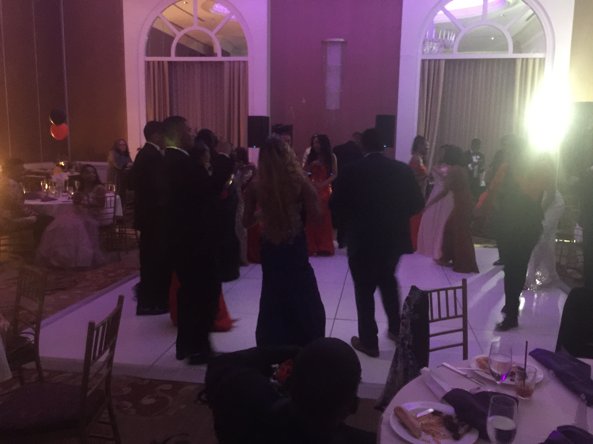
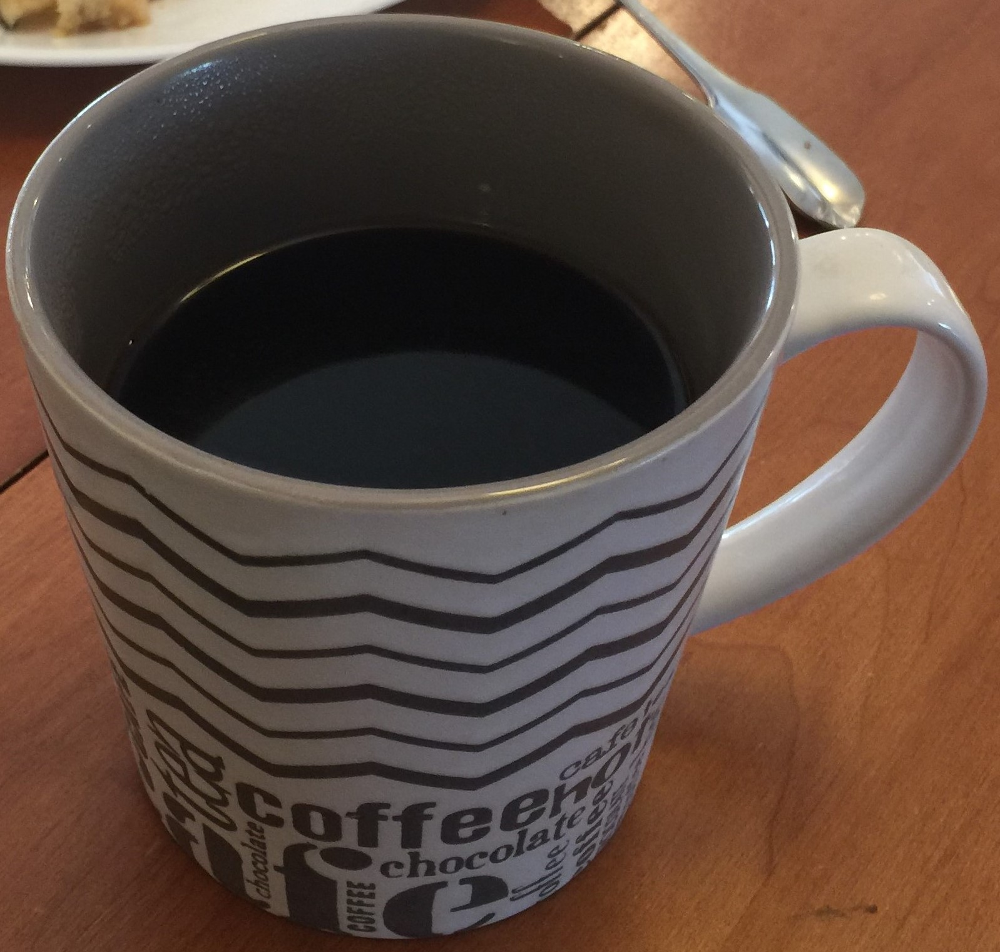

Automated Help for REAL LIFE OCCASIONS

There will be many times in life, we need help remembering the next thing that we are responsible for. Was it checking in, was it picking up the kids, or an Amazon package, or just a graceful exit from a meeting that is running too long, or a date that has gone from interesting to odd to uncomfortable? That's where we can "SAVE the Date!"
Sign UpAfter a quick sign up process that requires your name, email and phone number to be verified, you are already!
Using the calendar interface, create the instance of when you would like a gentle push to remember. Alarms are intrusive, can't be read, create disrespect or can be offensive. SAVE the Date is graceful.

How you use this power is up to you. Will this keep you intune with remembering to breath, meditate, take medication, smile, call your loved ones, or a graceful exit from a date saying your apartment alarm is going off, or a way to clearly state that your next appointment is demanding that the rest of the meeting is pushed to the next date? We're not here to judge, we want to SAVE the Date.
